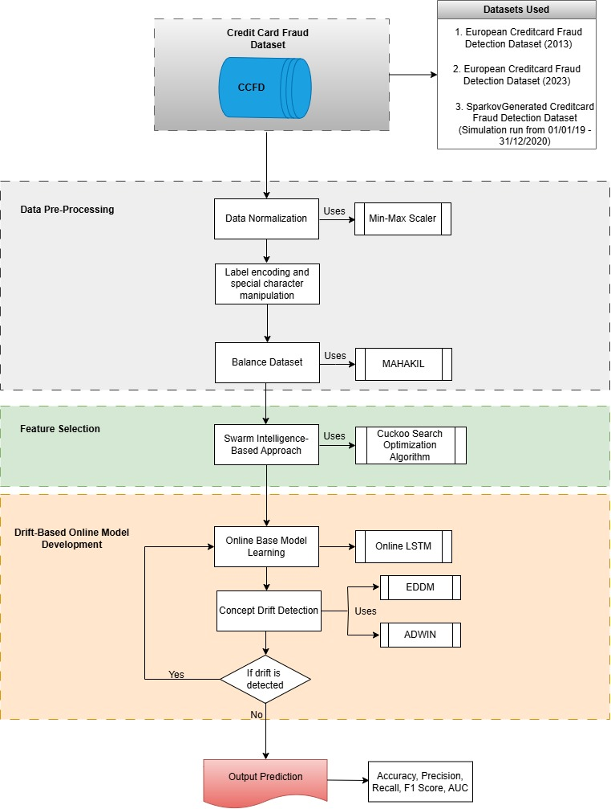
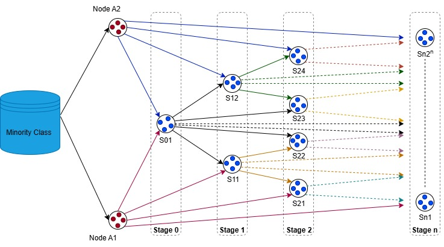
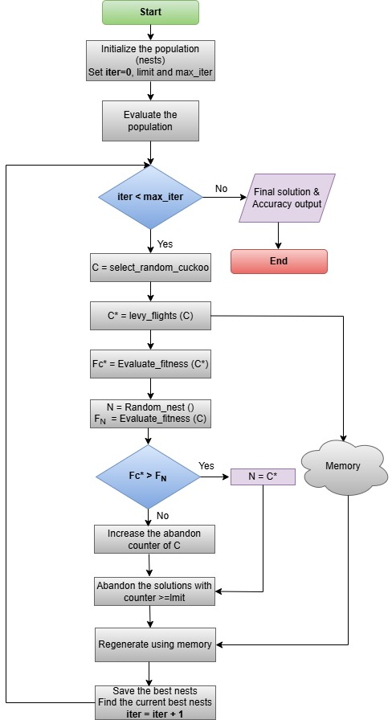
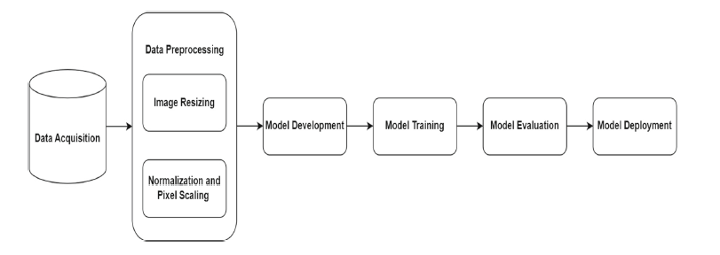
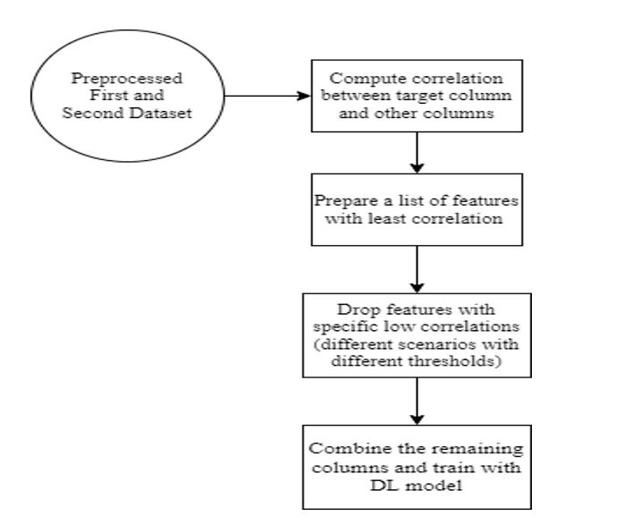
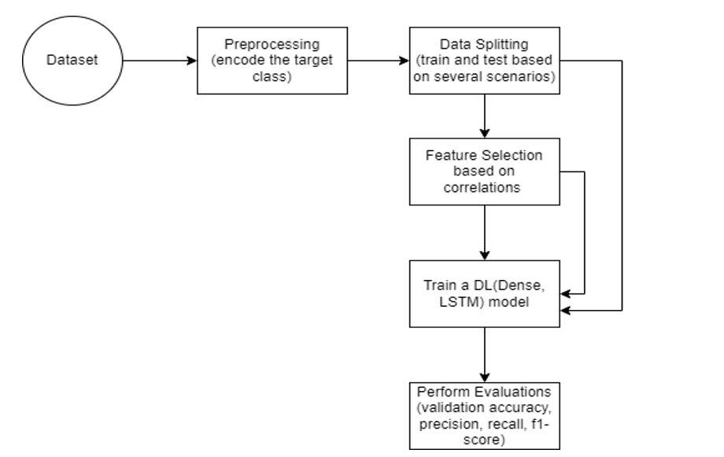
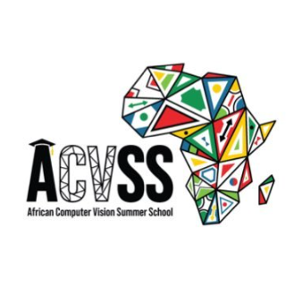

Albert Ankomah Dodoo
Research Assistant @Data Intelligence and Swarm Analytics Laboratory | Founder @Cortex Consult
Machine Learning Researcher | Cybersecurity | Healthcare | Computer Vision | Optimization Algorithms
Professional Journey
I am a results-driven Machine Learning researcher with expertise in pattern recognition, generative AI, swarm intelligence, and optimization algorithms. I am skilled in using machine learning models such as Vision Transformers (ViT), Generative Adversarial Networks, Graph Neural Networks (GNNs), and Long Short-Term Memory (LSTM) for application in healthcare, cybersecurity, ISRU, and robotics. I am proficient in using research findings from in-depth analysis to support decision-making. I have a proven track record in mentoring both graduate and undergraduate students interested in machine learning research and its application.
🎓 Academic Background
Core Expertise
Programming Languages
Machine Learning Models
Libraries & Frameworks
Visualization Tools
Productivity Tools
Publications
2025
SARS Detection in Chest CT-Scan Images Using Bootstrapped ViT-B16 Model
Springer, Iran Journal of Computer Science (2025)
Read Paper →2023
Resampled Correlation-Based Feature Descriptors: A Novel Approach to Enhancing Malware Detection Capabilities
Preprint at Research Square (2023)
Read Paper →Adapting Triple BigGAN for Image Detection Tasks: Challenges and Opportunities
Preprint at Research Square (2023)
Read Paper →Enhancing Unsupervised Signature Verification Through Advanced Feature Extraction Techniques
Preprint at Research Square (2023)
Read Paper →Selected Projects



Adaptive Drift-Aware CCF Detection Framework
Developed a robust Credit Card Fraud (CCF) detection framework utilizing an online LSTM architecture augmented with drift-detection mechanisms. Leveraged Memory-Based Cuckoo Search (MCS) for optimized feature selection.



ViT COVID-19 Detection Application
Mentored and collaborated with undergraduate students on cutting-edge research leveraging Vision Transformers (ViT) on chest CT scans for the rapid and robust detection of COVID-19 anomalies.


Malware Detection via LSTM Models
Developed an LSTM-based deep learning model applied to resampled correlation-based feature descriptors, achieving an outstanding 98% accuracy in identifying and classifying advanced mobile malware.
Communities & Affiliations

University of Ghana
Department of Computer Science

Data Intelligence & Swarm Analytics Lab
Research Member

African Computer Vision Summer School
Local Organizer (Ghana)
Get In Touch
I am currently open to exploring PhD opportunities and collaborative research in Computer Vision, Multimodal Learning, TinyML, Drift Detection and Machine Learning applications in general.
Send me an email